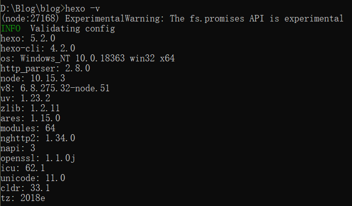
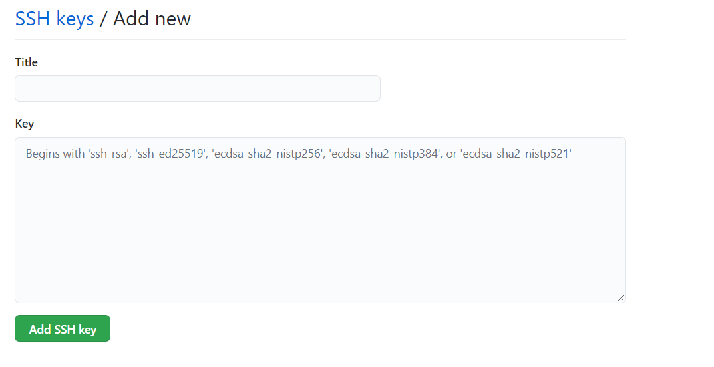
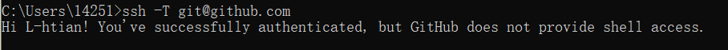

Hexo相关
Hexo介绍
什么是Hexo？
Hexo 是一个快速、简洁且高效的博客框架。Hexo 使用 Markdown（或其他渲染引擎）解析文章，在几秒内，即可利用靓丽的主题生成静态网页。
安装Hexo
安装前提
安装Git
- Windows：下载并安装 git.
- Mac：使用 Homebrew, MacPorts 或者下载 安装程序。
- Linux (Ubuntu, Debian)：
sudo apt-get install git-core - Linux (Fedora, Red Hat, CentOS)：
sudo yum install git-core
安装Node.js
- 参考菜鸟教程Node.js 安装配置
安装过程
- 在合适的地方新建一个文件夹，例如
D:\Blog - 打开cmd（命令提示符），使用
cd D:\Blog切换到新建的目录 - 输入命令
npm i hexo-cli -g - 安装完成后可以使用
hexo -v检查是否安装成功，结果类似下图

- 接着输入命令
hexo init <folder>，其中folder为你想要新建hexo博客的地方，也可以直接不输入folder。 - 如果上一步选择了folder，则切换到folder目录下，输入命令
npm install - 完成上述 步骤之后，输入
hexo g生成静态网页，再输入hexo s打开本地服务器。 - 浏览器打开
localhost:4000，能访问则表明建站成功
配置Github
设置本地git信息
在之前建立的文件夹下右键选择git bash here
输入
git config --global user.name "XXXX" //自定义用户名 git config --global user.email "xxxx@xx.com" //Github注册邮箱打开命令行输入
ssh-keygen -t rsa -C "xxxx@xx.com"一路回车打开Github，点击右上角头像后选择settings，选择New SSH key
如果是windows用户，那么在系统盘下（一般是C）选择User文件夹（也可能是用户），找到.ssh文件夹，使用记事本打开id_rsa.pub文件，将其中的内容复制下来
将刚刚复制的内容粘贴到下图中的Key栏里，title随意

- 点击Add SSH key
- 在命令行中输入
ssh -T git@github.com，若出现类似下图的提示，则表明成功

- 打开博客根目录下的_config.yml文件，这是博客的配置文件，用于配置博客的各种信息。
- 在最后一行加入如下信息，记得修改为自己的信息。注意！冒号后面一定要有一个空格！
deploy:
type: git
repo: git@github.com:L-htian/L-htian.github.io.git
branch: main- 打开Github，参考Github Docs设置Github Page
- 在命令行中输入
hexo clean与hexo d后在github.io上查看
设置matery主题
Hexo主题
Hexo相关的主题非常多，在Github上搜索Hexo就能搜到很多，我个人使用的是matery主题。很多地方参考主题的说明文档使用即可。下面说一些踩到的坑。
npm命令卡顿、速度过慢
使用主题时许多命令需要用到npm，但是常常会卡在原地一动不动。可以进行换源处理，具体操作为在命令行中输入npm config set registry https://registry.npm.taobao.org
莫名报错
大部分情况下输入hexo clean都能解决
matery主题优化相关
修改公告(dream一栏)里的每日一句
首页dream公告栏是matery主题的特色，但同样只支持纯文本。用同样的方法修改，使之显示“一言”的每日一句-小说类型。
/themes/hexo-theme-matery/layout/index.ejxline 16改为<i class="fa fa-volume-up fa-lg fa-fw text-color"></i> <%- '<span id="hitokoto">一言API请求超时。请稍后重试。</span>' %>同时在
/themes/hexo-theme-matery/layout/_partial/head.ejs增加代码：<script src="https://v1.hitokoto.cn/?c=d&encode=js&select=%23hitokoto" defer></script>
添加动态科技线条背景
在
themes/matery/layout/layout.ejs文件中添加如下代码：<!--动态线条背景--> <script type="text/javascript" color="122 103 238" opacity='0.7' zIndex="-2" count="200" src="//cdn.bootcss.com/canvas-nest.js/1.0.0/canvas-nest.min.js"> </script>
去掉右上角的github图标
打开你的主题配置文件，找到下面的配置:
# Whether to display fork me on github icon and link, default true, You can change it to your repo address
# 配置是否在 header 中显示 fork me on github 的图标，默认为true，你可以修改为你的仓库地址.
githubLink:
enable: true
url: https://github.com/blinkfox/hexo-theme-matery
title: Fork Me将enable的属性值由true改为false即可。
去掉主页的Github按钮
打开主题配置文件，找到下面的配置：
# 首页 banner 中的第二个按钮的配置，包括按钮的显示名称、font awesome图标和按钮的超链接.
indexbtn:
enable: true
name: Github
icon: fab fa-github-alt
url: https://github.com/blinkfox/hexo-theme-matery将enable属性值由true改为false即可。
修改导航栏颜色及透明效果
打开themes/matery/source/css/matery.css文件，大约在250行，有一个.bg-color属性，修改其属性值即可，代码如下：
.bg-color {
background-image: linear-gradient(to right, #4cbf30 0%, #0f9d58 100%); //修改成自己喜欢的颜色值
opacity: 0.8; //透明效果 值范围 0~1，看情况自己修改
}